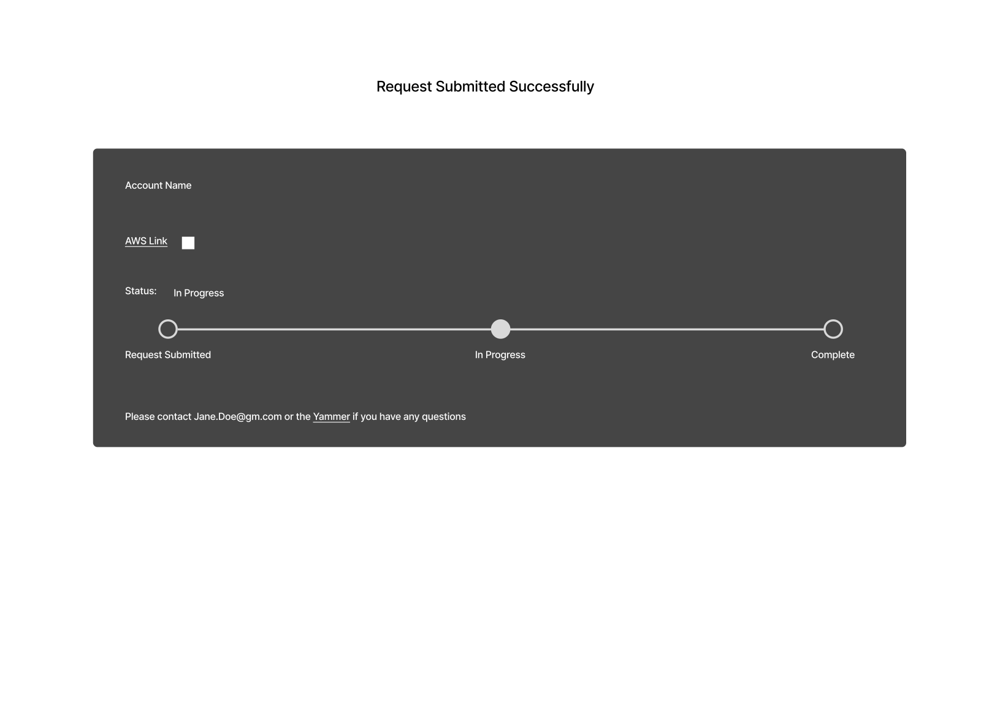
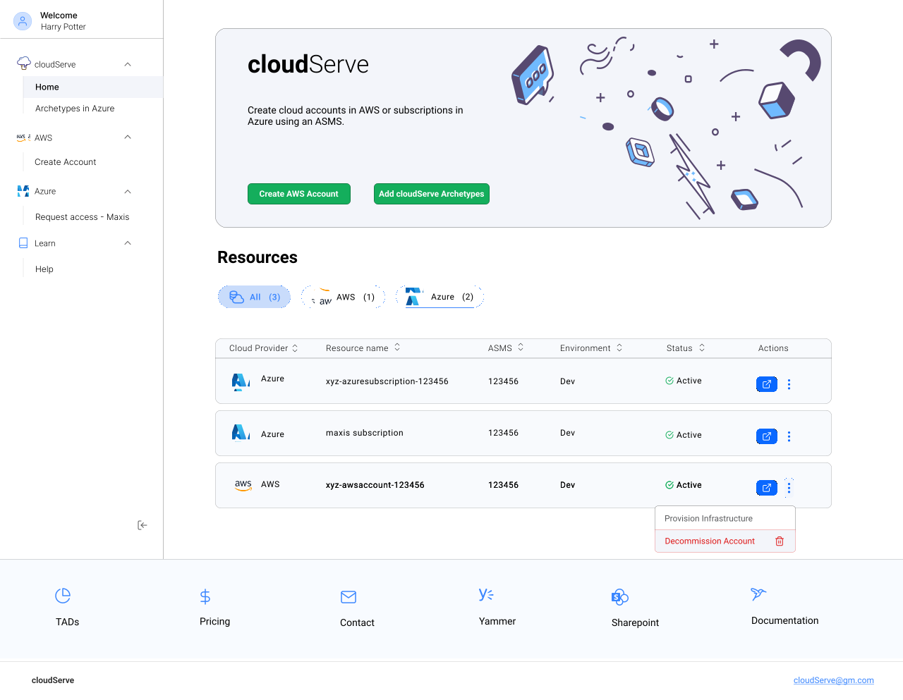

cloudServe
A new tool that automates cloud account and subscription requests, along with providing archetypes to speed up users' workflows.
As GM continues transitioning to the cloud, users will need access to cloud providers like AWS and Azure to complete their work, like developing new applications. We also need to provide Technical Architecture Diagrams and Templates to make sure users follow the same standard workflows to prevent costs from driving up. Our team needed to create a product to help users access cloud providers and share their work on the cloud. For this project I worked on a team with two other UX Designers. Some of my tasks included UX Research, UX and UI Design, and Marketing Content.
The problem
1. There is no consistent way for a user to get a cloud resource. Users aren’t sure how they can request their own Azure Subscription. Sometimes they have to reach out to the CCOE organization, but other times the organization isn’t able to help users obtain a subscription. There are also restrictions around which orgs can request a subscription, but there is no documentation or reasoning provided.
2. Getting access to data can take a long time. Users need to look around and message people to get access to data they need. Users would like to gain immediate visibility into what table and data sources are available to them or not so they don’t have to wait or search around before beginning their work.
3. Lack of Documentation. There are no coding or pricing standards shared across the org. Users need documentation to know about the cloud resource request process and to make sure they are not spending more money than needed on their cloud resources. Each team has their own TAD’s but users believe TAD’s might have some overlap with each other. They would like to view a plethora of TAD’s and see which is most applicable to their work.
Solution
A tool that automates the request process, accessible by anyone at the company. Resources and help links will also be provided so users know what selections to make when filling out the request form, as well as letting them know the coding standards to follow. We will also provide templates/archetypes to help users get started with common tasks like Streaming Data to 3rd parties and Delta Table Sharing.
User Interviews
Our team began by learning about the transition to the cloud. During meetings with other organizations, we learned there was a space for a new product to simplify the request process. Afterward, the UX Team along with our PM and Manager decided to conduct user interviews with workers who currently work in the cloud. The goal was to learn about their process and pain points they have when trying to complete their work. The interviews were semi-structured to allow users to talk about any relevant products and experiences. We wanted to learn about who they are, including their goals, needs, pain points and behaviors.
Our interviews consisted of 4 participants with 3 different user types
- 1 Architect
- 1 Engineer Lead
- 2 Developers
Summary
Personas
A common finding was that users didn't know how to request access to different data sources, and when they were able to request access, the request could take months to complete.
After summarizing our notes, we created two personas to encapsulate the behaviors and pain points from the interviews.
The first persona is Senior Architect who leads his team in working with cloud data in Azure and creates TADs for them. He struggles with finding and providing resource documentation. His biggest pain point is that his data access requests take a long time to be approved. He would like to have more automated processes, but understands someone still has to go in and set them up, which might take a long time anyway.

The second persona is a Software Developer who works in Github and ADO to productionalize. He also works with architects to get TADs built, but this can take a long time if the architects have a lot of requests. He too struggles with getting access to data, despite submitting a request. If he is working on a project and needs to change information like the number of needed IP’s, there is no clear path. He doesn’t know who to contact or where to find documentation.

Checkpoint
We shared our findings with our manager, PM, and director to make sure everyone was on the same page about what our users needed and what was feasible. We still needed to research different cloud platforms though to learn more about possible designs and restrictions though.
Cloud Research
While we learned about the different cloud tools from our user interviews and meetings with stakeholders, my team and I still felt there was room for us to learn. We researched more about AWS, Azure, GCP, Terraform, and ServiceNow. Our devs also conducted their own spikes and together we learned about the capabilities of each platform. From Terraform, I learned it has the ability to create workspaces and work with AWS, Azure, and Kubernetes. I also learned that ServiceNow has forms with different configurations.
We presented our findings and recommendations to management. After some conversations, we got a list of requirements for V1. We will be creating a homepage with the user’s requests and their statuses, along with a form the user fills out to request an AWS account or Azure Subscription, similar to some ServiceNow Forms. Terraform and a few other platforms will be used in the back-end to automatically provision user requests.
User Flow
Before sketching, we start by creating user flows to map the user’s current and future paths to complete their goals. We do this to compare the differences and to have the future flow to refer to later in the design process.
We each create our own user flows and then share with each other to combine them into one flow for each scenario. This ensures we think of every possible step without bias from each other.
After creating the final user flows, we added sticky notes around the steps with key information that we will likely return to when sketching. We added pink notes around steps where we had questions and purple notes around areas of opportunity to keep in mind while sketching.
Design Inspiration
The last step before designing is to look for Design inspiration for similar features. We shared our findings with each other to make sure everyone has as many ideas as possible. Using this inspiration and our previous research on cloud platforms, we began sketching with Crazy 8’s.

Crazy 8's
I didn’t have pen and paper to draw the crazy 8’s so I did my best to make low-fidelity wireframes and draw elements using my mouse.
Information architecture
After seeing how different some of our options were from the crazy 8’s, along with our remaining questions from the user flows, we knew we needed to confirm the final information architecture. We met with our stakeholders again to go over what we knew. Once we were all on the same page, we put together a site map. This helped us determine the content we wanted to include on the homepage, including the tiles and the information to display on them. We also decided on the inputs that would be included in the form, along with the information that would show after the user submits the form.
Low-Fidelity Designs
After confirming the information architecture, we began designing low-fidelity wireframes. Using some of our options from crazy 8’s, we created different options for the homepage and request form pages.
Below are some of the wireframes I designed as well as a description for each option.
Homepage
Users would see any account requests submitted. The tile would show the progress/status, the name of the account, and the link they can select to navigate to it in the cloud platform. At the time, I forgot to add a way for users to get to the form since I wasn't sure if we wanted a button on the homepage or a tab instead.
Request form
The form would automate the request process by making it so users don’t have to message other users or navigate directly to the different cloud platforms to request an account or subscription. Users will be able to input all their information in the form and submit it. Users can look at TADs
After submitting, they will see the status of the request as well as how to access their account. I also provided contact details in case they had any questions about the status of their account.

The design team, team manager, and PM voted on our favorite elements from each option. Once the most popular options were identified, we combined them into new pages. Since we were given a week to finish this first iteration, we decided to split up the work and by having one person work on each feature. I decided to work on the homepage this time.
Prototyping V1 Final Designs
For this product’s theme, we decided to follow the same one as our new data catalog product since these two products marked our start of creating cloud tools. The light theme with subtle blues would help the users not get overwhelmed by strong colors, as well as help them digest important information, making sure they don’t make mistakes. We used contrasting reds for error messages and vibrant greens to mark important buttons like for submitting the form. We made sure to use accessible colors by checking the contrast between each color/object and its background.
Below are the final designs for the homepage, along with the reasoning for the design choices. We had a few high-fidelity screens we iterated on based on stakeholder feedback. These designs have integrated that feedback.
Homepage for first time user. I created the banner with some opaque graphics to bring attention to the main functionality of the tool, without being too distracting. We also added instructions to let the user know how to get started. I added the resources at the bottom to serve almost as a footer since there may be different pages where the user will need to access them.
The homepage will also allow users to manage their accounts and subscriptions. On the tiles, I added metadata including an icon for the cloud provider, Account Name, Status information, Environment information, and ASMS (on-prem application/project) associated with the cloud resource. The Status will give users some clarity on whether their request is still in progress. There is also an open button so they can access their information on AWS or Azure. If there is an error with a request, the tile status will show error and we will display an error message.
These designs help solve users frustrations with a lack of documentation and provide the user clear communication about their request status, as well as any error information they may need to know.
V2 - Archetypes
From earlier meetings with our director, we knew the templates we wanted to include, now called Archetypes, were going to be added for V2. Because the back-end process was still being determined, there was a lot of uncertainty on how Archetypes would work and what inputs would be required from the user. We also knew that Archetypes would only be usable for Azure Subscriptions and not AWS Accounts. These archetypes would also help solve the user’s problem of not having access to certain data and also seeing TADs and flows used by other people.
Archetype Documentation
Archetype Workshops
The UX team and I conducted multiple workshops to determine the inputs needed from users and to help the developers talk about how they would make the process work. Together with our developers and the architects in the organization, we talked through the user flow. During the meetings, I helped build out the user flows and ask clarifying questions. I also moderated and led some of the sessions. We would make sure to clean up the flows after each workshop and then we went over them at the beginning of the next workshop to make sure the process we wrote down was still accurate.
There were a lot of things to consider: What’s possible in the back-end with Terraform and ServiceNow? What are the differences between having users use their own ASMS subscription or the Maxis Subscription? What attestations will need to be made if the user is sharing data externally or internally?
Archetype User Flows
This is the final flow for using archetypes as well as the final flows for the first two archetypes we would include in cloudServe.
General flow for Archetypes.
The first archetype is Delta sharing. This archetype will provision a Databricks workspace that has been configured for performant and secure delta table sharing with 3rd parties. Users will be required to fill out a Data Sharing Agreement.
The second archetype is Streaming Data. This archetype provides a set of resources to demonstrate streaming data being shared across multiple event hubs.
Final V2 Designs
The designs were determined by the user flows, which in turn were determined by the Terraform Inputs the user has to fill out. We used the same look for the forms as the form in V1. Unfortunately, there were some processes we couldn’t automate. When streaming data to 3rd parties, users have to fill out two Service Principle requests using another enterprise tool at GM called Galileo.
We did another cycle of crazy 8's, low-fidelity wireframes, and dot voting. To view what I made there, see the appendix at the end of the page.
Updated Homepage
The homepage had to be updated to account for the ability to use archetypes as well as provision infrastructure or decommission a cloud resource. We also got rid of the option to create new Azure subscriptions since that process would be replaced by ServiceNow in the future. For the new homepage, we made the nav a side nav instead. I organized the tabs by cloud provider along with the updated features we would have for each one. I also had the idea to organize the metadata into a table format instead to show the labels for them more clearly. We also added a 'More' button under Actions with options to decommission the resource or to provision infrastructure. Lastly tabs were added above the table to provide for better organization and searchability when the user has a lot of cloud resources.

Delta Sharing Archetype


Streaming Data Archetype


Logo
Since this product marked a new direction for the team and the types of products we would be making, we had to use a new logo. The name for the product was decided by the team earlier, so I wanted to make something that fit the name. The name made me think about cloud and ice cream icons. These were some of the initial options I made.
I mainly wanted a cloud that looked like dripping ice cream in a cone. The team voted and chose the top left logo as the final option. I still iterated on the icon though based on the feedback from the UX team and PM.
This is the final look for the icon. I made it shorter and without the markings on the ice cream cone. The final color I chose was a purple-blueberry like gradient. I used Adobe Illustrator to create it, mostly utilizing the shape builder tool.
Conclusion
cloudServe was a great experience designing for a different aspect of the cloud space. I learned a lot about the cloud providers we would be using and their technical capabilities. I got a better idea about the feasibility of different solution ideas.
There was a lot of uncertainty about Archetypes but our workshops really helped finalize the solutions we needed. When cleaning up the flows after the workshops, I was able to come to some of the right conclusions and assumptions based on patterns we saw from the user research and our independent cloud research. I felt good about making these assumptions, but my team and I still had questions about the flows. I wasn’t afraid to ask questions and I wanted to make sure the flow was totally correct to prevent errors in the future. I did as much independent research as I could on my own before asking others for help. This prior research would also help me know what to ask when I did need help.
Thanks to this project my technical knowledge and design skills improved. I had a cross-functional team with the stakeholders, architects, and developers to learn from as well. In terms of design, my low-fi wireframes from V2 looked a lot more clean and clear compared to the ones from v1. I experimented with a lot of layouts and I also used more autolayout components in Figma to speed up the iteration process. I was happy to build another product from beginning to end. V1 of the product has recently launched and V2 is currently in development.
Appendix
V1 Request Form (designed by another team meamber)

V2 Crazy8's - Homepage and Archetype Selector

V2 Low-Fidelity Wireframes - Homepage
V2 Low-Fidelity Wireframes - Archetype Selector
- UX Research
- UX Design
- User Flows
- Information Architecture
- Stakeholder Workshops
- Figma
- Adobe Illustrator